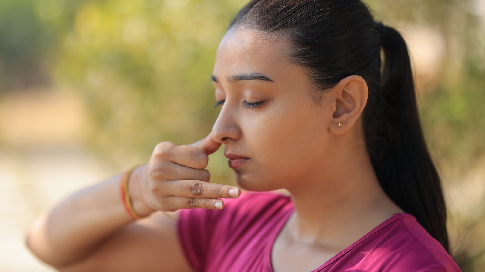

КЛИНИЧЕСКАЯ ТЕРАПИЯ
Панические атаки
Паническое расстройство, внезапные приступы страха и избегающее поведение — клиническое психотерапевтическое лечение
Паническое расстройство, внезапные приступы страха и избегающее поведение — клиническое психотерапевтическое лечение
Внезапный, интенсивный, длящийся 10–20 минут приступ страха с реакциями тела
Сердцебиение, сдавление в груди, одышка, онемение рук и ног, головокружение, пот.
«Я сейчас умру», «у меня сердечный приступ» — при этом медицинские обследования в норме.
Не ходить в места, где начинался приступ: магазин, метро, толпа. Жизненное пространство сужается.
Страх «снова начнётся» присутствует постоянно. Этот страх сам провоцирует новые атаки.
Выходить одному становится невозможно. Всегда нужен «надёжный человек» рядом.
Ночные атаки, страх засыпания, сны с постоянным ощущением дрожи.
Сочетание КПТ и экспозиционной терапии даёт устойчивый результат
Объясняется цикл паники. Формируется понимание «это не может навредить мне». Психообразование — критический шаг.
Обучаются техники дыхания, которые применяются во время приступа. Регулируются телесные реакции.
Выявляются катастрофизирующие мысли. Подготавливаются реалистичные альтернативы.
Постепенное приближение к избегаемым ситуациям. Страх уменьшается, жизненное пространство расширяется.
Одиночная сессия или ежемесячный пакет — подберём формат вместе
Оплата банковским переводом или через СБП.
Механизм приступа, техники остановки и длительное лечение

Статья · 8 мин Что делать во время панической атаки? — 3 быстрых техники › Статья · 9 мин
Что происходит в мозге во время панической атаки? — Миндалина и ложная тревога
›
Статья · 9 мин
Что происходит в мозге во время панической атаки? — Миндалина и ложная тревога
›
 Статья · 8 мин
Агорафобия — от панических атак к социальной изоляции
›
Статья · 8 мин
Агорафобия — от панических атак к социальной изоляции
›